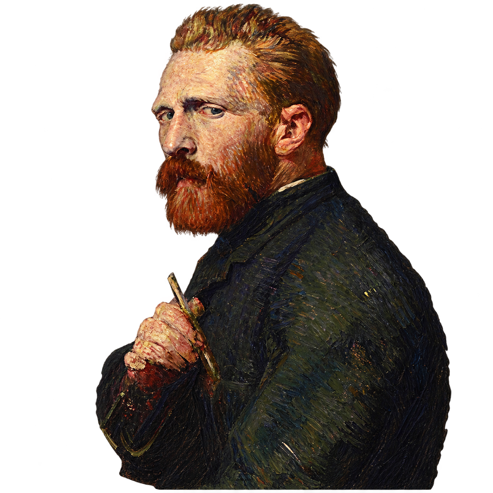

Desarrollo Web
Construcción de interfaces modernas usando HTML, CSS y JavaScript, enfocadas en diseño responsive y buena experiencia de usuario.
Estudiante de Ingeniería de Sistemas, interesado en desarrollo web, backend, inteligencia artificial, análisis de datos y creación de soluciones digitales.

Me gusta crear proyectos funcionales, mejorar interfaces, aprender nuevas tecnologías y construir aplicaciones que puedan resolver problemas reales.
Este portafolio es el espacio donde voy documentando mi progreso como desarrollador — desde proyectos frontend hasta APIs REST, sistemas fullstack e inteligencia artificial.
Esta sección muestra las áreas en las que estoy fortaleciendo mis conocimientos como desarrollador y estudiante de Ingeniería de Sistemas.
Construcción de interfaces modernas usando HTML, CSS y JavaScript, enfocadas en diseño responsive y buena experiencia de usuario.
Desarrollo de APIs REST con Java y Spring Boot, y Node.js con Express. Autenticación JWT, Spring Security y bases de datos relacionales y no relacionales.
Uso de Python para procesar información, generar reportes, visualizar datos y automatizar tareas.
Desarrollo de chatbots con arquitectura RAG, embeddings semánticos, indexado vectorial con FAISS y modelos de lenguaje.
Cursos y certificaciones completados que complementan mi formación como desarrollador e ingeniero de sistemas.
Amazon Web Services · AWS Training & Certification
Las 5 V de los macrodatos y los servicios de AWS que las resuelven: S3, Redshift, Lake Formation, Glue, Kinesis, SageMaker, Athena y más.
Amazon Web Services · AWS Training & Certification
Fundamentos de la nube AWS: servicios core, seguridad, arquitectura, precios y soporte. Base para la certificación oficial AWS Cloud Practitioner.
Selecciona un proyecto para ver los detalles.
Chatbot inteligente basado en recuperación de información (RAG) desarrollado en Python. Recuperación semántica por embeddings e indexado vectorial con FAISS.
Puedes ver mis proyectos y avances directamente en mi perfil de GitHub.
Ir a GitHub